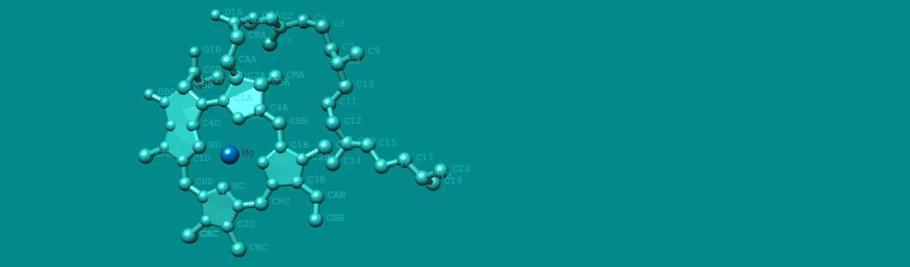
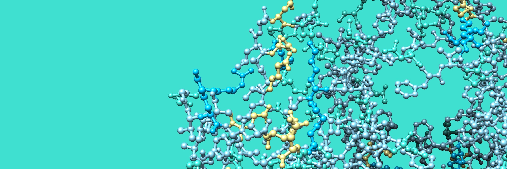
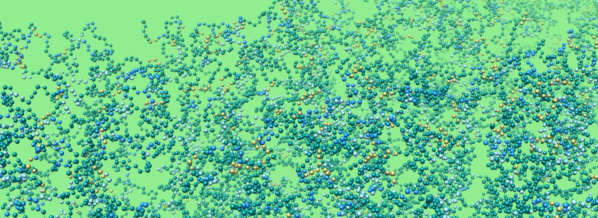

How Photosynthesis Captures Light

Photosynthetic electron transport
It starts from green pigment molecules, called chlorophylls.
When light (a photon) hits a chlorophyll,
the light energy vibrates the molecule and generates the excited state of the chlorophyll.
This excitation energy can be transferred to another chlorophyll.
Most chlorophylls are located in photosynthetic proteins,
called light-harvesting complex (LHC) proteins.
The location of each chlorophyll is arranged in a certain way within LHC proteins
so that the excitation energy can travel through different chlorophylls to different proteins.
The excitation energy is guided to a special pair of chlorophylls (so-called P680),
which is located in a reaction center of the photosystem II, a large protein complex,
where the excitation energy is used to split water into electrons,
protons, and oxygen.
The electrons generated from water travel through photosynthetic membranes,
called thylakoids, and
eventually reach another special pair of chlorophylls (so-called P700),
which is located in a reaction center of the photosystem I.
Using another excitation energy traveled through LHC proteins,
photosystem I brings the electrons up to the next stage
(ferredoxin and ferredoxin–NADP+ reductase),
which facilitates the generation of chemical energy (NADPH).
The protons generated from water add pressure inside thylakoids.
Additional protons are also translocated into thylakoids by photosynthetic electron transport.
The build-up of this pressure, a so-called proton motive force,
activates the ATPase, which generates another form of chemical energy (ATP).
Both NADPH and ATP are essential energy sources that drive a series of enzymatic activities that
convert CO2 into biomolecules, which form life on Earth.
This series of reactions was called Calvin–Benson–Bassham cycle,
named after the researchers at Lawrence Berkeley National Laboratory who carried out experiments
to demonstrate the process in 1950.
Isn't it just amazing to think how light could connect everything from chlorophylls to water, chemical energy, CO2, and all the life forms?
But, we still don't know many things about how photosynthesis manages to do that.
To understand biophysical and biochemical processes of light energy conversion, my research is focusing on the following fundamental questions:
- How light energy travels through pigments within and between photosynthetic proteins
- What specific domains of LHC proteins are essential for regulating light harvesting
Elucidating these molecular details will be valuable information for developing technologies to manipulate light.
Exploring Photosynthesis in action

Interaction and reorganization
All of the cellular activities are maintained by using chemical energy generated by respiration and photosynthesis.
The main players of these activities are proteins - made of a chain of amino acids -
that can work specific tasks in the right place at the right time.
The design of each protein is stored in the genome as a gene - a sequence of DNA.
The genetic information is first copied into RNA (transcription), which then serves as a template (mRNA)
for ribosomes to fuse amino acids together into a specific chain according to the template (translation).
A chain of amino acids is folded into a specific manner and becomes a protein.
So, if you know what's in a genome, you can tell which proteins (and more) exist in the organism.
Through genomics, we start to know what proteins exist in a cell.
But, we barely know how this gene expression is controlled.
How does it know how much and when a specific protein is required in a specific place?
We are also not quite sure how proteins are targeted to a specific place and folded into an appropriate way.
We have the same issues for photosynthesis.
We know the main players of photosynthesis, but we barely know how they respond to changing environments,
such as light intensity, temperature, and nutrient supply.
Also, there are numerous proteins in chloroplasts we don't know what they are doing.
What is surprising is that the majority of the proteins in chloroplasts are coming from the nucleus.
How does it know what is happening inside chloroplasts?
Isn't it just astonishing to realize how each protein can work together harmoniously in a cell?
As we start to know the main players for photosynthesis, the next step is to understand how they do and who helps.
To understand photosynthesis in action, my research is focusing on the following fundamental questions:
- How photosynthetic proteins interact one another to control energy usage
- How dynamically LHC proteins behave in thylakoids and regulate protein reorganizations
Elucidating these molecular details will help understand how photosynthetic machinery can adapt to ever-changing stress environments.
An Amazing Maze of Photosynthesis

Thylakoid Dynamics
Within a cell, there are several different compartments for specific purposes, such as
a nucleus for DNA storage and gene expression, a Golgi apparatus for modifying and sorting macromolecules,
and a mitochondrion for respiration and energy production using sugar.
The origin of these different cellular compartments is a big mystery.
The compartmentalization is crucial for cellular activities because each biochemical reaction has to be
done in specific conditions, such as a right pH and chemical ingredients.
These compartments are established by physical barriers made of lipids.
Having both hydrophilic heads and hydrophobic tails, lipids can form a thin membrane containing two layers of
lipids, called lipid bilayers - the heads and tails facing outside and inside, respectively.
It is absolutely true that the study of lipids is a whole different universe among all biological research fields.
A chloroplast, the site of photosynthesis, is also made of lipid bilayers.
There are several compartments within a chloroplast.
The chloroplast outer and inner envelopes contain the port of entry (integral membrane proteins),
which allows certain micro- and macromolecules in and out of chloroplasts.
The inner compartment of the chloroplast is the stroma, where RuBisCO exists,
and the Calvin–Benson–Bassham cycle takes place.
Inside the stroma, thylakoids exist as the site of light-harvesting and photosynthetic electron transport.
As the most inner compartment of chloroplasts, the thylakoid lumen is the site of the water-splitting reaction,
which generates oxygen, electrons, and protons.
Even though we know thylakoids contain all the necessary components for light harvesting and photosynthetic electron transport,
we don't know how thylakoids are made.
As the most striking feature, thylakoids are assembled into an intricate network of lipid structures -
forming cylindrical stacks consisting multiple disc-shaped lipid compartments (grana), which are connected by
elongated lipid compartments in a helical fashion (stroma lamellae).
We don't even know whether these different compartments are made of one lipid compartment or not.
What makes it more interesting is that each photosynthetic organism seems to have different thylakoid architecture,
which suggests a functional adjustment for a specific environment.
Isn't it just puzzling how lipids can be assembled into such a complex architecture to make photosynthetic reactions possible?
In contrast to DNA or proteins, it is very difficult to control the behaviors and examine the characteristics of lipids.
But, as we know more and more about genomics, transcriptomics, and proteomics of photosynthesis,
it's about time to tackle the lipid biochemistry of photosynthesis.
To understand the complexity of thylakoids and its unique role in photosynthesis,
my research is focusing on the following fundamental questions:
- How protein-protein and protein-lipid interactions affect the formation of thylakoid architecture
- How thylakoid architecture influences excitation energy transfer among photosynthetic proteins
Elucidating these molecular details will be the key to understand a macroscale regulation of light energy conversion as well as
engineer lipid-base photosynthetic biotechnologies.